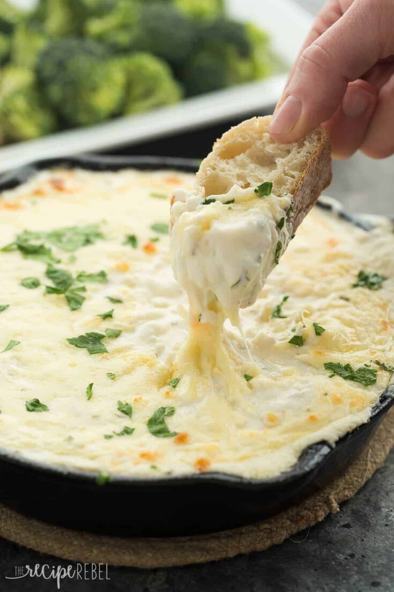

Cheesy Chicken Alfredo Dip

Description:
This Cheesy Chicken Alfredo Dip is perfect for game day, movie night,
an appetizer or a casual dinner!
It's creamy, cheesy, and made from scratch!
Perfect with crusty bread or vegetables.
Ingredients:
- 3 tablespoons butter.
- 3 tablespoons flour.
- 1/2 teaspoon salt.
- 1 teaspoon dried parsley.
- 1/2 teaspoon minced garlic.
- 1 cup chicken broth.
- 1 cup 1% milk.
- 1/2 cup shredded Parmesan cheese.
- 1 cup shredded mozzarella cheese divided.
- 1 8oz package cream cheese
- 2 cups cooked chopped chicken breast (about 1 large breast).
Steps:
- In a medium skillet, melt butter. Stir in flour until smooth.
- Add salt, parsley, and garlic and cook 1 minute.
- Add broth and milk and whisk until smooth. Cook over medium heat, whisking often, until thickened and smooth.
Stir in Parmesan cheese and ½ cup mozzarella.
- In a medium bowl, beat cream cheese with an electric mixer until smooth. Add Alfredo sauce and beat until smooth. Stir in chicken.
- Spread into a medium baking dish (1-1.5 quarts) and sprinkle with remaining ½ cup mozzarella cheese.
- Bake at 400 degrees for 15-20 minutes, until bubbly and beginning to brown, or cover and refrigerate up to 2 days until ready to bake.
Serve with veggies, crackers and crusty bread.
NB: The recipe was taken from The Recipe Rebel Website